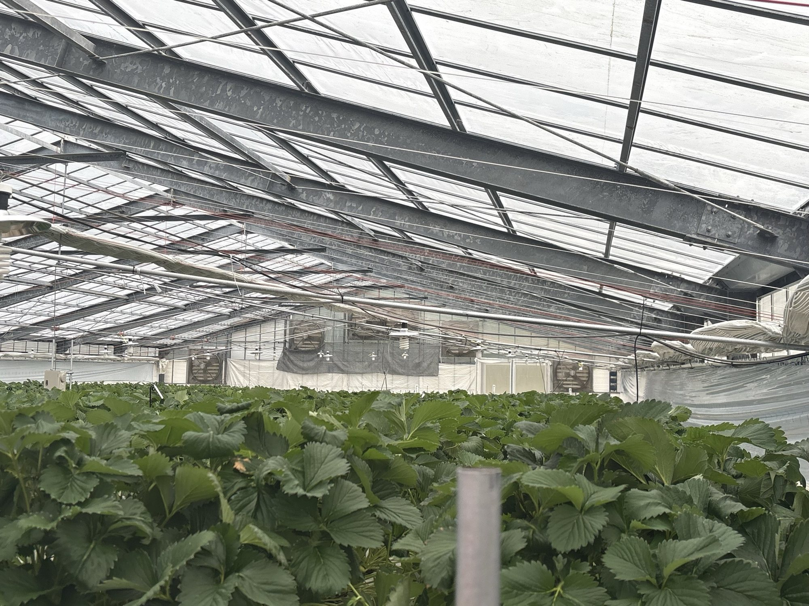
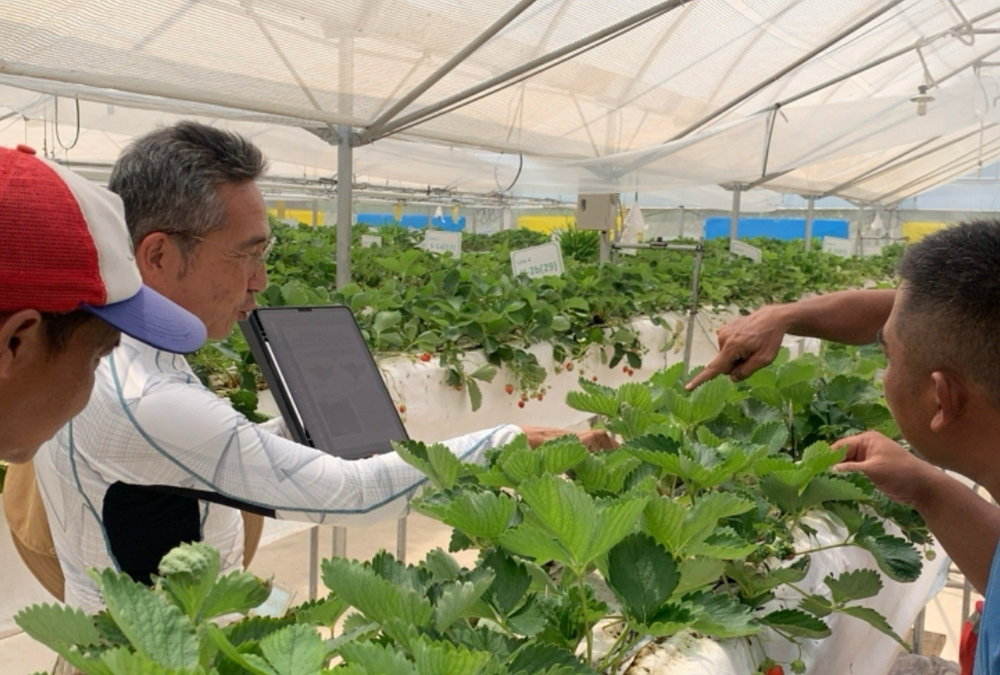
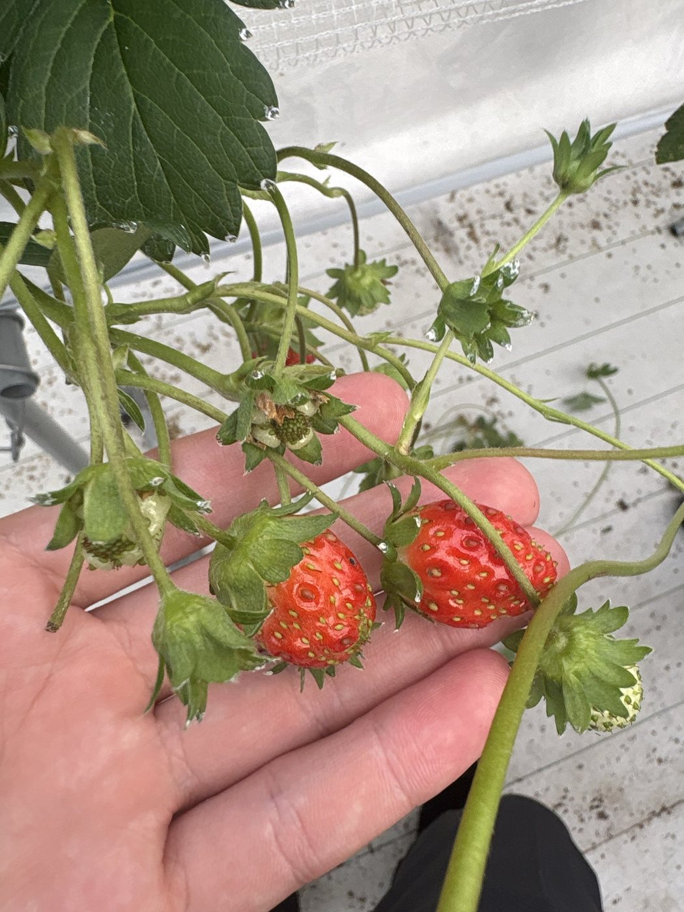
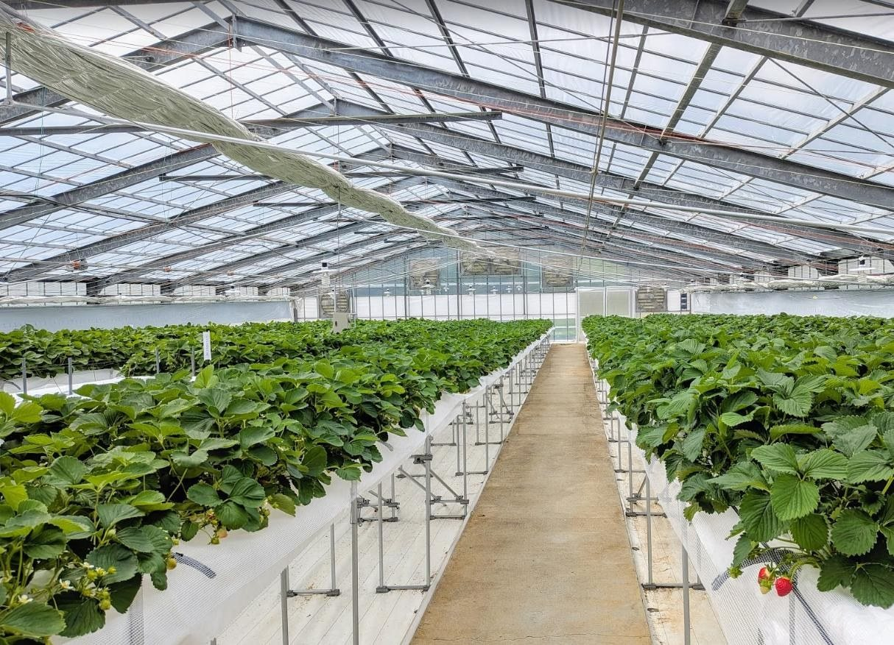
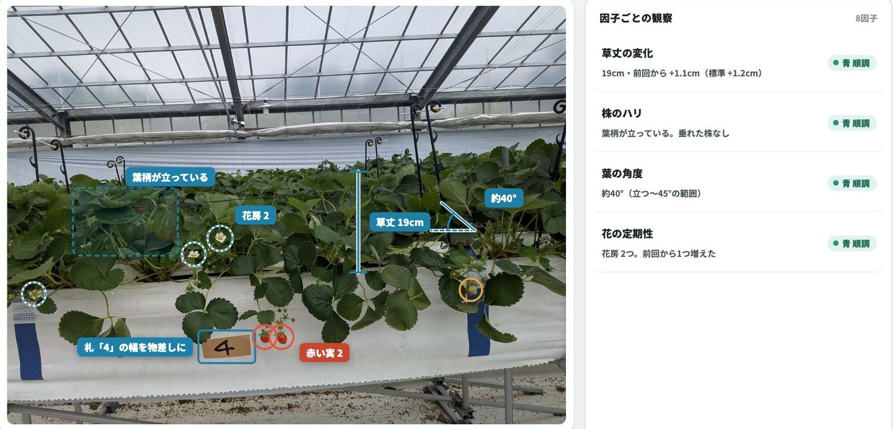
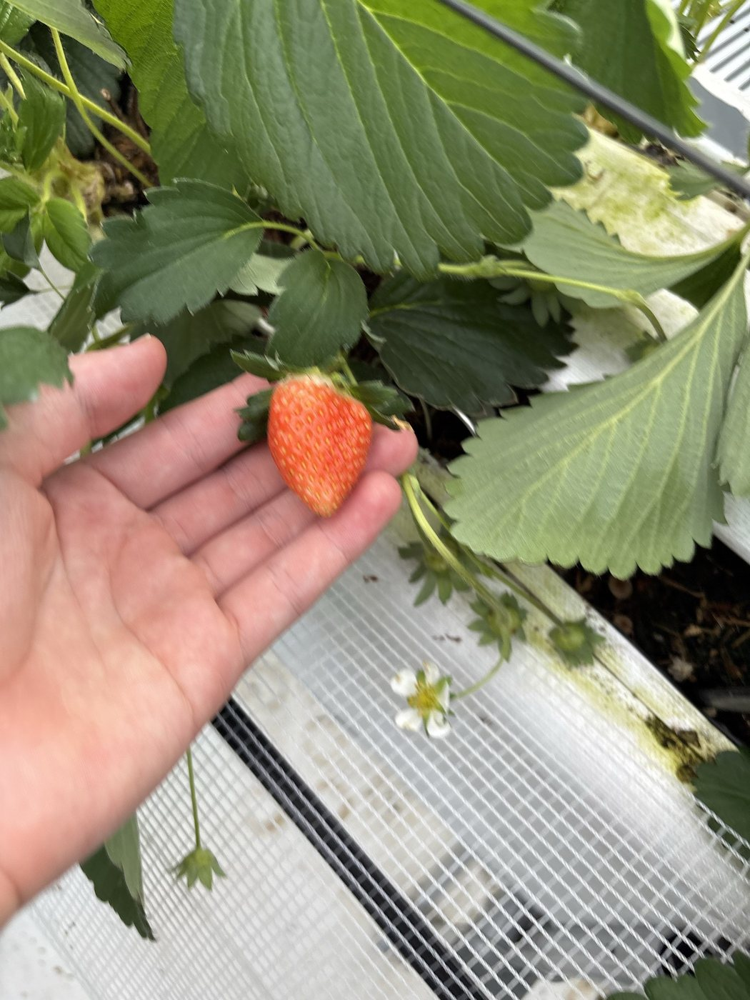
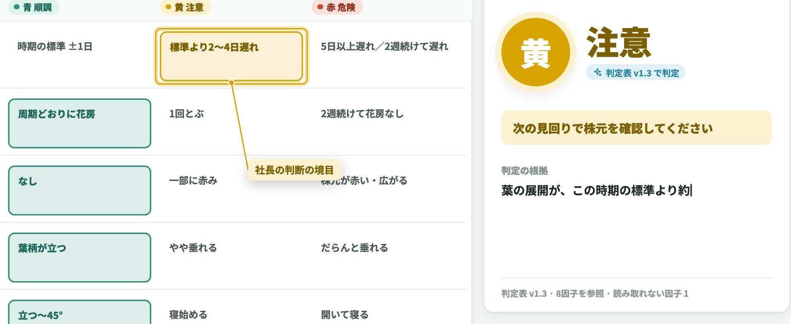

MODEL 01データ基盤
農ビス／FDE
- 概要
- 全国の農家が持つ職人の判断を、音声対話でデータ化する
- 収益モデル
- データ獲得を優先し、月額数万円の価格で普及させる
- 到達目標
- 数千〜数万農園規模のデータ基盤


02
Smart Agriculture
職人の判断をデータにし、生産から販売まで、産地と企業をつなぐ事業を展開します。会話で記録する「農ビス」、提携農業法人との生産、農業に参入する企業の支援の3つを、役割を分けて進めています。

農業事業の3つの事業モデル
MODEL 01データ基盤
MODEL 02生産事業
MODEL 03顧客接点
事業間の連携
事業モデルの紹介


MODEL 01データ基盤
作業中の会話から、職人の判断とその理由をデータとして蓄積します。
作業しながら話すだけで、その日の記録が残る
AIが判断の理由を聞き返し、根拠ごとデータにする
大規模な農業法人には、エンジニアが現場で判断を言語化する

MODEL 02生産事業
提携農業法人と共同で、供給の少ない時期・地域に高単価の作物を生産します。
沖縄・インドネシアで、高温でも甘いイチゴを栽培する
国内では生産者の少ないバニラを生産する
1シーズンの数字を確定し、別拠点の1棟で再現する

MODEL 03顧客接点
農業に参入する企業を、事業設計から販売の立ち上げまで支援します。
作物・地域・販路から逆算して、事業を設計する
栽培管理と記録の仕組みを導入する
ブランドづくりと販路の開拓まで支援する
FDE・受託開発の事例



ご相談
開発のご相談から協業のご提案まで、担当者がお返事します。